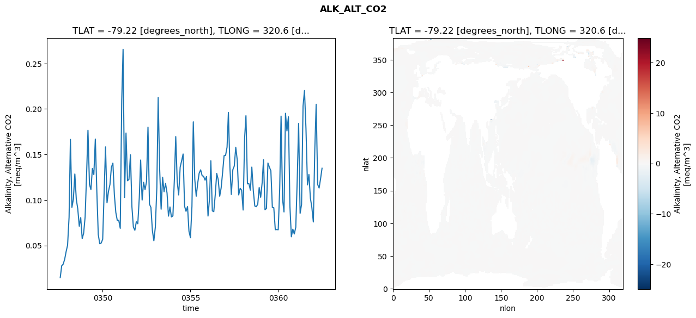
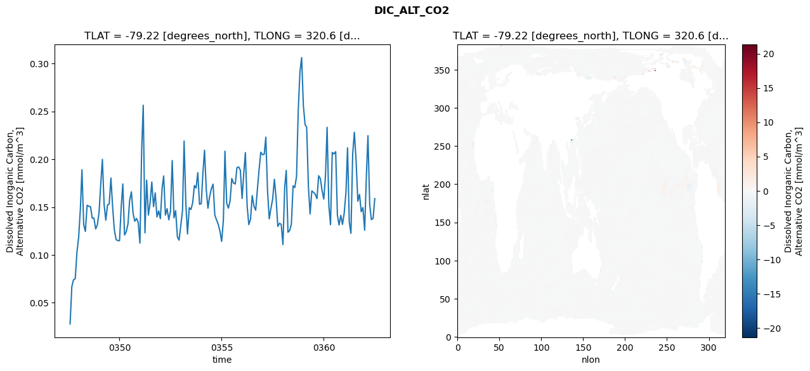
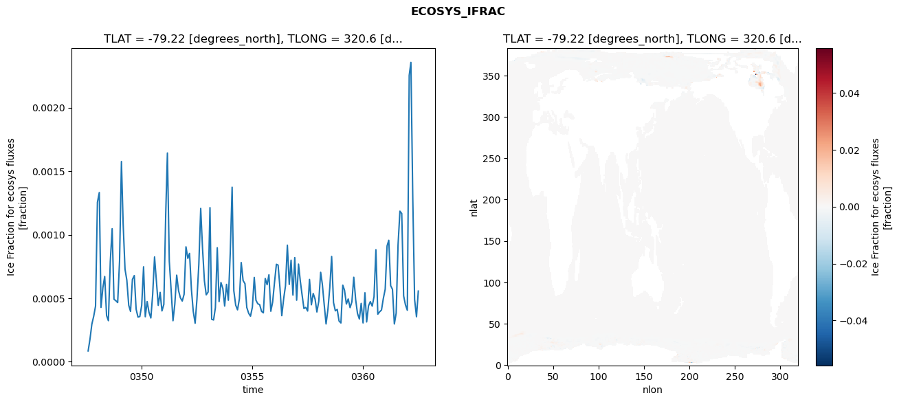
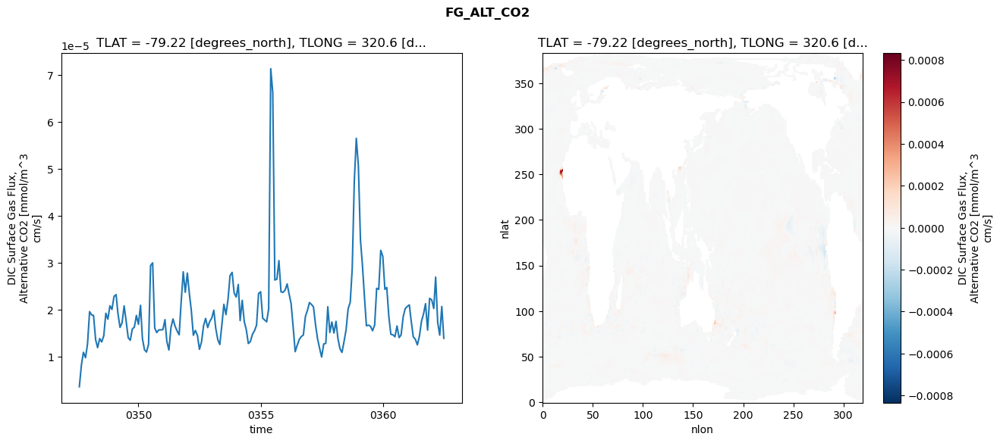

glb-dor_North_Atlantic_basin_009_1999-07-01_00038#
Simulation details#
Case: smyle.cdr-atlas-v0.glb-dor_North_Atlantic_basin_009_1999-07-01_00038.001
Basin: North_Atlantic_basin
Polygon: 9.0
Start date: 1999-07
Show code cell source Hide code cell source
import xarray as xr
import matplotlib.pyplot as plt
Show code cell source Hide code cell source
zarr_store = "/path/to/zarr/store"
# Parameters
zarr_store = "/global/cfs/projectdirs/m4746/Projects/Ocean-CDR-Atlas-v0/data/validation/smyle.cdr-atlas-v0.glb-dor_North_Atlantic_basin_009_1999-07-01_00038.001.validation.zarr"
Show code cell source Hide code cell source
%%time
ds_o = xr.open_zarr(zarr_store).compute()
ds_o
CPU times: user 670 ms, sys: 464 ms, total: 1.13 s
Wall time: 1.48 s
<xarray.Dataset> Size: 2MB
Dimensions: (nlat: 384, nlon: 320, time: 180)
Coordinates:
TLAT float64 8B -79.22
TLONG float64 8B 320.6
ULAT float64 8B -78.95
ULONG float64 8B 321.1
* time (time) object 1kB 0347-08-01 00:00:00 ... 0362-07-01 0...
z_t float32 4B 500.0
Dimensions without coordinates: nlat, nlon
Data variables:
ALK_ALT_CO2_diff (nlat, nlon) float32 492kB nan nan nan ... nan nan nan
ALK_ALT_CO2_rmse (time) float64 1kB 0.01464 0.02771 ... 0.1235 0.1348
DIC_ALT_CO2_diff (nlat, nlon) float32 492kB nan nan nan ... nan nan nan
DIC_ALT_CO2_rmse (time) float64 1kB 0.02796 0.06686 ... 0.1383 0.1589
ECOSYS_IFRAC_diff (nlat, nlon) float32 492kB nan nan nan ... nan nan nan
ECOSYS_IFRAC_rmse (time) float64 1kB 8.481e-05 0.00018 ... 0.0005565
FG_ALT_CO2_diff (nlat, nlon) float32 492kB nan nan nan ... nan nan nan
FG_ALT_CO2_rmse (time) float64 1kB 3.643e-06 8.297e-06 ... 1.396e-05xarray.Dataset
- nlat: 384
- nlon: 320
- time: 180
- TLAT()float64-79.22
- long_name :
- array of t-grid latitudes
- units :
- degrees_north
array(-79.22052261)
- TLONG()float64320.6
- long_name :
- array of t-grid longitudes
- units :
- degrees_east
array(320.56250892)
- ULAT()float64-78.95
- long_name :
- array of u-grid latitudes
- units :
- degrees_north
array(-78.95289509)
- ULONG()float64321.1
- long_name :
- array of u-grid longitudes
- units :
- degrees_east
array(321.12500894)
- time(time)object0347-08-01 00:00:00 ... 0362-07-...
- bounds :
- time_bound
- long_name :
- time
array([cftime.DatetimeNoLeap(347, 8, 1, 0, 0, 0, 0, has_year_zero=True), cftime.DatetimeNoLeap(347, 9, 1, 0, 0, 0, 0, has_year_zero=True), cftime.DatetimeNoLeap(347, 10, 1, 0, 0, 0, 0, has_year_zero=True), cftime.DatetimeNoLeap(347, 11, 1, 0, 0, 0, 0, has_year_zero=True), cftime.DatetimeNoLeap(347, 12, 1, 0, 0, 0, 0, has_year_zero=True), cftime.DatetimeNoLeap(348, 1, 1, 0, 0, 0, 0, has_year_zero=True), cftime.DatetimeNoLeap(348, 2, 1, 0, 0, 0, 0, has_year_zero=True), cftime.DatetimeNoLeap(348, 3, 1, 0, 0, 0, 0, has_year_zero=True), cftime.DatetimeNoLeap(348, 4, 1, 0, 0, 0, 0, has_year_zero=True), cftime.DatetimeNoLeap(348, 5, 1, 0, 0, 0, 0, has_year_zero=True), cftime.DatetimeNoLeap(348, 6, 1, 0, 0, 0, 0, has_year_zero=True), cftime.DatetimeNoLeap(348, 7, 1, 0, 0, 0, 0, has_year_zero=True), cftime.DatetimeNoLeap(348, 8, 1, 0, 0, 0, 0, has_year_zero=True), cftime.DatetimeNoLeap(348, 9, 1, 0, 0, 0, 0, has_year_zero=True), cftime.DatetimeNoLeap(348, 10, 1, 0, 0, 0, 0, has_year_zero=True), cftime.DatetimeNoLeap(348, 11, 1, 0, 0, 0, 0, has_year_zero=True), cftime.DatetimeNoLeap(348, 12, 1, 0, 0, 0, 0, has_year_zero=True), cftime.DatetimeNoLeap(349, 1, 1, 0, 0, 0, 0, has_year_zero=True), cftime.DatetimeNoLeap(349, 2, 1, 0, 0, 0, 0, has_year_zero=True), cftime.DatetimeNoLeap(349, 3, 1, 0, 0, 0, 0, has_year_zero=True), cftime.DatetimeNoLeap(349, 4, 1, 0, 0, 0, 0, has_year_zero=True), cftime.DatetimeNoLeap(349, 5, 1, 0, 0, 0, 0, has_year_zero=True), cftime.DatetimeNoLeap(349, 6, 1, 0, 0, 0, 0, has_year_zero=True), cftime.DatetimeNoLeap(349, 7, 1, 0, 0, 0, 0, has_year_zero=True), cftime.DatetimeNoLeap(349, 8, 1, 0, 0, 0, 0, has_year_zero=True), cftime.DatetimeNoLeap(349, 9, 1, 0, 0, 0, 0, has_year_zero=True), cftime.DatetimeNoLeap(349, 10, 1, 0, 0, 0, 0, has_year_zero=True), cftime.DatetimeNoLeap(349, 11, 1, 0, 0, 0, 0, has_year_zero=True), cftime.DatetimeNoLeap(349, 12, 1, 0, 0, 0, 0, has_year_zero=True), cftime.DatetimeNoLeap(350, 1, 1, 0, 0, 0, 0, has_year_zero=True), cftime.DatetimeNoLeap(350, 2, 1, 0, 0, 0, 0, has_year_zero=True), cftime.DatetimeNoLeap(350, 3, 1, 0, 0, 0, 0, has_year_zero=True), cftime.DatetimeNoLeap(350, 4, 1, 0, 0, 0, 0, has_year_zero=True), cftime.DatetimeNoLeap(350, 5, 1, 0, 0, 0, 0, has_year_zero=True), cftime.DatetimeNoLeap(350, 6, 1, 0, 0, 0, 0, has_year_zero=True), cftime.DatetimeNoLeap(350, 7, 1, 0, 0, 0, 0, has_year_zero=True), cftime.DatetimeNoLeap(350, 8, 1, 0, 0, 0, 0, has_year_zero=True), cftime.DatetimeNoLeap(350, 9, 1, 0, 0, 0, 0, has_year_zero=True), cftime.DatetimeNoLeap(350, 10, 1, 0, 0, 0, 0, has_year_zero=True), cftime.DatetimeNoLeap(350, 11, 1, 0, 0, 0, 0, has_year_zero=True), cftime.DatetimeNoLeap(350, 12, 1, 0, 0, 0, 0, has_year_zero=True), cftime.DatetimeNoLeap(351, 1, 1, 0, 0, 0, 0, has_year_zero=True), cftime.DatetimeNoLeap(351, 2, 1, 0, 0, 0, 0, has_year_zero=True), cftime.DatetimeNoLeap(351, 3, 1, 0, 0, 0, 0, has_year_zero=True), cftime.DatetimeNoLeap(351, 4, 1, 0, 0, 0, 0, has_year_zero=True), cftime.DatetimeNoLeap(351, 5, 1, 0, 0, 0, 0, has_year_zero=True), cftime.DatetimeNoLeap(351, 6, 1, 0, 0, 0, 0, has_year_zero=True), cftime.DatetimeNoLeap(351, 7, 1, 0, 0, 0, 0, has_year_zero=True), cftime.DatetimeNoLeap(351, 8, 1, 0, 0, 0, 0, has_year_zero=True), cftime.DatetimeNoLeap(351, 9, 1, 0, 0, 0, 0, has_year_zero=True), cftime.DatetimeNoLeap(351, 10, 1, 0, 0, 0, 0, has_year_zero=True), cftime.DatetimeNoLeap(351, 11, 1, 0, 0, 0, 0, has_year_zero=True), cftime.DatetimeNoLeap(351, 12, 1, 0, 0, 0, 0, has_year_zero=True), cftime.DatetimeNoLeap(352, 1, 1, 0, 0, 0, 0, has_year_zero=True), cftime.DatetimeNoLeap(352, 2, 1, 0, 0, 0, 0, has_year_zero=True), cftime.DatetimeNoLeap(352, 3, 1, 0, 0, 0, 0, has_year_zero=True), cftime.DatetimeNoLeap(352, 4, 1, 0, 0, 0, 0, has_year_zero=True), cftime.DatetimeNoLeap(352, 5, 1, 0, 0, 0, 0, has_year_zero=True), cftime.DatetimeNoLeap(352, 6, 1, 0, 0, 0, 0, has_year_zero=True), cftime.DatetimeNoLeap(352, 7, 1, 0, 0, 0, 0, has_year_zero=True), cftime.DatetimeNoLeap(352, 8, 1, 0, 0, 0, 0, has_year_zero=True), cftime.DatetimeNoLeap(352, 9, 1, 0, 0, 0, 0, has_year_zero=True), cftime.DatetimeNoLeap(352, 10, 1, 0, 0, 0, 0, has_year_zero=True), cftime.DatetimeNoLeap(352, 11, 1, 0, 0, 0, 0, has_year_zero=True), cftime.DatetimeNoLeap(352, 12, 1, 0, 0, 0, 0, has_year_zero=True), cftime.DatetimeNoLeap(353, 1, 1, 0, 0, 0, 0, has_year_zero=True), cftime.DatetimeNoLeap(353, 2, 1, 0, 0, 0, 0, has_year_zero=True), cftime.DatetimeNoLeap(353, 3, 1, 0, 0, 0, 0, has_year_zero=True), cftime.DatetimeNoLeap(353, 4, 1, 0, 0, 0, 0, has_year_zero=True), cftime.DatetimeNoLeap(353, 5, 1, 0, 0, 0, 0, has_year_zero=True), cftime.DatetimeNoLeap(353, 6, 1, 0, 0, 0, 0, has_year_zero=True), cftime.DatetimeNoLeap(353, 7, 1, 0, 0, 0, 0, has_year_zero=True), cftime.DatetimeNoLeap(353, 8, 1, 0, 0, 0, 0, has_year_zero=True), cftime.DatetimeNoLeap(353, 9, 1, 0, 0, 0, 0, has_year_zero=True), cftime.DatetimeNoLeap(353, 10, 1, 0, 0, 0, 0, has_year_zero=True), cftime.DatetimeNoLeap(353, 11, 1, 0, 0, 0, 0, has_year_zero=True), cftime.DatetimeNoLeap(353, 12, 1, 0, 0, 0, 0, has_year_zero=True), cftime.DatetimeNoLeap(354, 1, 1, 0, 0, 0, 0, has_year_zero=True), cftime.DatetimeNoLeap(354, 2, 1, 0, 0, 0, 0, has_year_zero=True), cftime.DatetimeNoLeap(354, 3, 1, 0, 0, 0, 0, has_year_zero=True), cftime.DatetimeNoLeap(354, 4, 1, 0, 0, 0, 0, has_year_zero=True), cftime.DatetimeNoLeap(354, 5, 1, 0, 0, 0, 0, has_year_zero=True), cftime.DatetimeNoLeap(354, 6, 1, 0, 0, 0, 0, has_year_zero=True), cftime.DatetimeNoLeap(354, 7, 1, 0, 0, 0, 0, has_year_zero=True), cftime.DatetimeNoLeap(354, 8, 1, 0, 0, 0, 0, has_year_zero=True), cftime.DatetimeNoLeap(354, 9, 1, 0, 0, 0, 0, has_year_zero=True), cftime.DatetimeNoLeap(354, 10, 1, 0, 0, 0, 0, has_year_zero=True), cftime.DatetimeNoLeap(354, 11, 1, 0, 0, 0, 0, has_year_zero=True), cftime.DatetimeNoLeap(354, 12, 1, 0, 0, 0, 0, has_year_zero=True), cftime.DatetimeNoLeap(355, 1, 1, 0, 0, 0, 0, has_year_zero=True), cftime.DatetimeNoLeap(355, 2, 1, 0, 0, 0, 0, has_year_zero=True), cftime.DatetimeNoLeap(355, 3, 1, 0, 0, 0, 0, has_year_zero=True), cftime.DatetimeNoLeap(355, 4, 1, 0, 0, 0, 0, has_year_zero=True), cftime.DatetimeNoLeap(355, 5, 1, 0, 0, 0, 0, has_year_zero=True), cftime.DatetimeNoLeap(355, 6, 1, 0, 0, 0, 0, has_year_zero=True), cftime.DatetimeNoLeap(355, 7, 1, 0, 0, 0, 0, has_year_zero=True), cftime.DatetimeNoLeap(355, 8, 1, 0, 0, 0, 0, has_year_zero=True), cftime.DatetimeNoLeap(355, 9, 1, 0, 0, 0, 0, has_year_zero=True), cftime.DatetimeNoLeap(355, 10, 1, 0, 0, 0, 0, has_year_zero=True), cftime.DatetimeNoLeap(355, 11, 1, 0, 0, 0, 0, has_year_zero=True), cftime.DatetimeNoLeap(355, 12, 1, 0, 0, 0, 0, has_year_zero=True), cftime.DatetimeNoLeap(356, 1, 1, 0, 0, 0, 0, has_year_zero=True), cftime.DatetimeNoLeap(356, 2, 1, 0, 0, 0, 0, has_year_zero=True), cftime.DatetimeNoLeap(356, 3, 1, 0, 0, 0, 0, has_year_zero=True), cftime.DatetimeNoLeap(356, 4, 1, 0, 0, 0, 0, has_year_zero=True), cftime.DatetimeNoLeap(356, 5, 1, 0, 0, 0, 0, has_year_zero=True), cftime.DatetimeNoLeap(356, 6, 1, 0, 0, 0, 0, has_year_zero=True), cftime.DatetimeNoLeap(356, 7, 1, 0, 0, 0, 0, has_year_zero=True), cftime.DatetimeNoLeap(356, 8, 1, 0, 0, 0, 0, has_year_zero=True), cftime.DatetimeNoLeap(356, 9, 1, 0, 0, 0, 0, has_year_zero=True), cftime.DatetimeNoLeap(356, 10, 1, 0, 0, 0, 0, has_year_zero=True), cftime.DatetimeNoLeap(356, 11, 1, 0, 0, 0, 0, has_year_zero=True), cftime.DatetimeNoLeap(356, 12, 1, 0, 0, 0, 0, has_year_zero=True), cftime.DatetimeNoLeap(357, 1, 1, 0, 0, 0, 0, has_year_zero=True), cftime.DatetimeNoLeap(357, 2, 1, 0, 0, 0, 0, has_year_zero=True), cftime.DatetimeNoLeap(357, 3, 1, 0, 0, 0, 0, has_year_zero=True), cftime.DatetimeNoLeap(357, 4, 1, 0, 0, 0, 0, has_year_zero=True), cftime.DatetimeNoLeap(357, 5, 1, 0, 0, 0, 0, has_year_zero=True), cftime.DatetimeNoLeap(357, 6, 1, 0, 0, 0, 0, has_year_zero=True), cftime.DatetimeNoLeap(357, 7, 1, 0, 0, 0, 0, has_year_zero=True), cftime.DatetimeNoLeap(357, 8, 1, 0, 0, 0, 0, has_year_zero=True), cftime.DatetimeNoLeap(357, 9, 1, 0, 0, 0, 0, has_year_zero=True), cftime.DatetimeNoLeap(357, 10, 1, 0, 0, 0, 0, has_year_zero=True), cftime.DatetimeNoLeap(357, 11, 1, 0, 0, 0, 0, has_year_zero=True), cftime.DatetimeNoLeap(357, 12, 1, 0, 0, 0, 0, has_year_zero=True), cftime.DatetimeNoLeap(358, 1, 1, 0, 0, 0, 0, has_year_zero=True), cftime.DatetimeNoLeap(358, 2, 1, 0, 0, 0, 0, has_year_zero=True), cftime.DatetimeNoLeap(358, 3, 1, 0, 0, 0, 0, has_year_zero=True), cftime.DatetimeNoLeap(358, 4, 1, 0, 0, 0, 0, has_year_zero=True), cftime.DatetimeNoLeap(358, 5, 1, 0, 0, 0, 0, has_year_zero=True), cftime.DatetimeNoLeap(358, 6, 1, 0, 0, 0, 0, has_year_zero=True), cftime.DatetimeNoLeap(358, 7, 1, 0, 0, 0, 0, has_year_zero=True), cftime.DatetimeNoLeap(358, 8, 1, 0, 0, 0, 0, has_year_zero=True), cftime.DatetimeNoLeap(358, 9, 1, 0, 0, 0, 0, has_year_zero=True), cftime.DatetimeNoLeap(358, 10, 1, 0, 0, 0, 0, has_year_zero=True), cftime.DatetimeNoLeap(358, 11, 1, 0, 0, 0, 0, has_year_zero=True), cftime.DatetimeNoLeap(358, 12, 1, 0, 0, 0, 0, has_year_zero=True), cftime.DatetimeNoLeap(359, 1, 1, 0, 0, 0, 0, has_year_zero=True), cftime.DatetimeNoLeap(359, 2, 1, 0, 0, 0, 0, has_year_zero=True), cftime.DatetimeNoLeap(359, 3, 1, 0, 0, 0, 0, has_year_zero=True), cftime.DatetimeNoLeap(359, 4, 1, 0, 0, 0, 0, has_year_zero=True), cftime.DatetimeNoLeap(359, 5, 1, 0, 0, 0, 0, has_year_zero=True), cftime.DatetimeNoLeap(359, 6, 1, 0, 0, 0, 0, has_year_zero=True), cftime.DatetimeNoLeap(359, 7, 1, 0, 0, 0, 0, has_year_zero=True), cftime.DatetimeNoLeap(359, 8, 1, 0, 0, 0, 0, has_year_zero=True), cftime.DatetimeNoLeap(359, 9, 1, 0, 0, 0, 0, has_year_zero=True), cftime.DatetimeNoLeap(359, 10, 1, 0, 0, 0, 0, has_year_zero=True), cftime.DatetimeNoLeap(359, 11, 1, 0, 0, 0, 0, has_year_zero=True), cftime.DatetimeNoLeap(359, 12, 1, 0, 0, 0, 0, has_year_zero=True), cftime.DatetimeNoLeap(360, 1, 1, 0, 0, 0, 0, has_year_zero=True), cftime.DatetimeNoLeap(360, 2, 1, 0, 0, 0, 0, has_year_zero=True), cftime.DatetimeNoLeap(360, 3, 1, 0, 0, 0, 0, has_year_zero=True), cftime.DatetimeNoLeap(360, 4, 1, 0, 0, 0, 0, has_year_zero=True), cftime.DatetimeNoLeap(360, 5, 1, 0, 0, 0, 0, has_year_zero=True), cftime.DatetimeNoLeap(360, 6, 1, 0, 0, 0, 0, has_year_zero=True), cftime.DatetimeNoLeap(360, 7, 1, 0, 0, 0, 0, has_year_zero=True), cftime.DatetimeNoLeap(360, 8, 1, 0, 0, 0, 0, has_year_zero=True), cftime.DatetimeNoLeap(360, 9, 1, 0, 0, 0, 0, has_year_zero=True), cftime.DatetimeNoLeap(360, 10, 1, 0, 0, 0, 0, has_year_zero=True), cftime.DatetimeNoLeap(360, 11, 1, 0, 0, 0, 0, has_year_zero=True), cftime.DatetimeNoLeap(360, 12, 1, 0, 0, 0, 0, has_year_zero=True), cftime.DatetimeNoLeap(361, 1, 1, 0, 0, 0, 0, has_year_zero=True), cftime.DatetimeNoLeap(361, 2, 1, 0, 0, 0, 0, has_year_zero=True), cftime.DatetimeNoLeap(361, 3, 1, 0, 0, 0, 0, has_year_zero=True), cftime.DatetimeNoLeap(361, 4, 1, 0, 0, 0, 0, has_year_zero=True), cftime.DatetimeNoLeap(361, 5, 1, 0, 0, 0, 0, has_year_zero=True), cftime.DatetimeNoLeap(361, 6, 1, 0, 0, 0, 0, has_year_zero=True), cftime.DatetimeNoLeap(361, 7, 1, 0, 0, 0, 0, has_year_zero=True), cftime.DatetimeNoLeap(361, 8, 1, 0, 0, 0, 0, has_year_zero=True), cftime.DatetimeNoLeap(361, 9, 1, 0, 0, 0, 0, has_year_zero=True), cftime.DatetimeNoLeap(361, 10, 1, 0, 0, 0, 0, has_year_zero=True), cftime.DatetimeNoLeap(361, 11, 1, 0, 0, 0, 0, has_year_zero=True), cftime.DatetimeNoLeap(361, 12, 1, 0, 0, 0, 0, has_year_zero=True), cftime.DatetimeNoLeap(362, 1, 1, 0, 0, 0, 0, has_year_zero=True), cftime.DatetimeNoLeap(362, 2, 1, 0, 0, 0, 0, has_year_zero=True), cftime.DatetimeNoLeap(362, 3, 1, 0, 0, 0, 0, has_year_zero=True), cftime.DatetimeNoLeap(362, 4, 1, 0, 0, 0, 0, has_year_zero=True), cftime.DatetimeNoLeap(362, 5, 1, 0, 0, 0, 0, has_year_zero=True), cftime.DatetimeNoLeap(362, 6, 1, 0, 0, 0, 0, has_year_zero=True), cftime.DatetimeNoLeap(362, 7, 1, 0, 0, 0, 0, has_year_zero=True)], dtype=object) - z_t()float32500.0
- long_name :
- depth from surface to midpoint of layer
- positive :
- down
- units :
- centimeters
- valid_max :
- 537500.0
- valid_min :
- 500.0
array(500., dtype=float32)
- ALK_ALT_CO2_diff(nlat, nlon)float32nan nan nan nan ... nan nan nan nan
- cell_methods :
- time: mean
- grid_loc :
- 3111
- long_name :
- Alkalinity, Alternative CO2
- units :
- meq/m^3
array([[ nan, nan, nan, ..., nan, nan, nan], [ nan, nan, nan, ..., nan, nan, nan], [0.00927734, 0.00732422, 0.01855469, ..., nan, nan, nan], ..., [ nan, nan, nan, ..., nan, nan, nan], [ nan, nan, nan, ..., nan, nan, nan], [ nan, nan, nan, ..., nan, nan, nan]], dtype=float32) - ALK_ALT_CO2_rmse(time)float640.01464 0.02771 ... 0.1235 0.1348
- cell_methods :
- time: mean
- grid_loc :
- 3111
- long_name :
- Alkalinity, Alternative CO2
- units :
- meq/m^3
array([0.0146422 , 0.02770978, 0.02939562, 0.03467943, 0.04306514, 0.05029014, 0.08101874, 0.16652694, 0.09184738, 0.10076038, 0.12853576, 0.10082499, 0.09015181, 0.07112255, 0.08059549, 0.05748085, 0.06347887, 0.08152517, 0.12927595, 0.17659927, 0.11710583, 0.11138159, 0.13464228, 0.12792508, 0.16694828, 0.10965418, 0.06197476, 0.05190848, 0.0526378 , 0.05687675, 0.10937954, 0.15829588, 0.0968685 , 0.1094532 , 0.11694982, 0.13602527, 0.14046872, 0.10544134, 0.08630273, 0.07733805, 0.07759992, 0.06882146, 0.20903054, 0.26553674, 0.10274744, 0.17355483, 0.12111198, 0.12257642, 0.14964191, 0.09234457, 0.07018899, 0.06666753, 0.07604227, 0.07386104, 0.10229437, 0.14387448, 0.09991856, 0.11935941, 0.11135448, 0.12001897, 0.18003523, 0.09528534, 0.09177119, 0.06612138, 0.05518363, 0.07028799, 0.11374568, 0.21263039, 0.1333848 , 0.08980749, 0.12492986, 0.10903449, 0.11809623, 0.10762586, 0.08223886, 0.09228252, 0.08131402, 0.08248045, 0.12343814, 0.16964499, 0.11987891, 0.1054951 , 0.13601404, 0.14293633, 0.1504879 , 0.09302638, 0.08751237, 0.09273449, 0.0656291 , 0.05853654, 0.09295989, 0.18585832, 0.12248769, 0.10412991, 0.11862735, 0.12943659, 0.13310063, 0.12664898, 0.12596201, 0.12170077, 0.12572063, 0.08230769, 0.10121477, 0.14301 , 0.08802138, 0.08711046, 0.10596996, 0.12917447, 0.12242776, 0.10411168, 0.11317817, 0.13043106, 0.14864188, 0.14898891, 0.15797578, 0.19615269, 0.13628652, 0.10600336, 0.13320786, 0.13725395, 0.15792943, 0.14380989, 0.10552404, 0.11274647, 0.11076193, 0.08892698, 0.16771517, 0.19256597, 0.11767024, 0.11792009, 0.11078345, 0.1361149 , 0.10991343, 0.09334029, 0.09257178, 0.09519658, 0.11365632, 0.10290513, 0.11908972, 0.14410511, 0.0893086 , 0.09055559, 0.14057169, 0.13598576, 0.13208713, 0.09175233, 0.09144023, 0.06732056, 0.06746659, 0.06722919, 0.112912 , 0.19212974, 0.10072176, 0.08683759, 0.19520156, 0.17585867, 0.1914226 , 0.09331426, 0.05958273, 0.06789842, 0.06260379, 0.07002494, 0.12354185, 0.18409644, 0.08532602, 0.09497055, 0.20300151, 0.22017732, 0.17822071, 0.11650191, 0.12801753, 0.10199843, 0.09192656, 0.07578398, 0.15633458, 0.20515983, 0.11705776, 0.11313589, 0.12352057, 0.13484629]) - DIC_ALT_CO2_diff(nlat, nlon)float32nan nan nan nan ... nan nan nan nan
- cell_methods :
- time: mean
- grid_loc :
- 3111
- long_name :
- Dissolved Inorganic Carbon, Alternative CO2
- units :
- mmol/m^3
array([[ nan, nan, nan, ..., nan, nan, nan], [ nan, nan, nan, ..., nan, nan, nan], [-0.01293945, -0.01123047, -0.00634766, ..., nan, nan, nan], ..., [ nan, nan, nan, ..., nan, nan, nan], [ nan, nan, nan, ..., nan, nan, nan], [ nan, nan, nan, ..., nan, nan, nan]], dtype=float32) - DIC_ALT_CO2_rmse(time)float640.02796 0.06686 ... 0.1383 0.1589
- cell_methods :
- time: mean
- grid_loc :
- 3111
- long_name :
- Dissolved Inorganic Carbon, Alternative CO2
- units :
- mmol/m^3
array([0.02795598, 0.06686061, 0.07400979, 0.07514001, 0.10255617, 0.11839387, 0.14832405, 0.18897394, 0.13173901, 0.1245504 , 0.15178802, 0.15095215, 0.15022807, 0.1384518 , 0.13841422, 0.12718116, 0.1313502 , 0.1445622 , 0.17510045, 0.19982993, 0.1526739 , 0.13635337, 0.15212782, 0.15332463, 0.18039274, 0.14929651, 0.12614845, 0.11597242, 0.11499951, 0.11482471, 0.15043051, 0.1741435 , 0.12082624, 0.12419223, 0.13217222, 0.15687936, 0.16586922, 0.14330981, 0.13522486, 0.13813389, 0.13404158, 0.11234101, 0.20955094, 0.25636097, 0.12304511, 0.17809944, 0.14168483, 0.15427815, 0.17619121, 0.15045417, 0.16481687, 0.1396272 , 0.14603892, 0.13789893, 0.16971689, 0.18251944, 0.14162434, 0.14829409, 0.13667192, 0.14588264, 0.19860698, 0.13879547, 0.14622981, 0.11889268, 0.11539332, 0.13064326, 0.14652072, 0.2190146 , 0.15359056, 0.12193516, 0.14938132, 0.1474432 , 0.15428048, 0.17250453, 0.16989778, 0.18595069, 0.15299002, 0.15345318, 0.18644762, 0.2094609 , 0.16851419, 0.14881741, 0.16121123, 0.1691941 , 0.17396128, 0.14152298, 0.13668336, 0.13195057, 0.12492657, 0.11410994, 0.13653083, 0.20838797, 0.15377426, 0.14893339, 0.15650124, 0.17984588, 0.17500641, 0.17413532, 0.191136 , 0.19195268, 0.18846264, 0.15897734, 0.18585414, 0.2069425 , 0.15137059, 0.13169532, 0.13737172, 0.16201611, 0.15089123, 0.14673237, 0.16820875, 0.18926997, 0.20728428, 0.20470069, 0.20525382, 0.22304658, 0.16665648, 0.13771652, 0.14891614, 0.15816107, 0.17903112, 0.15909123, 0.12980486, 0.13310669, 0.13193533, 0.1107815 , 0.17032099, 0.18826542, 0.12371843, 0.12542278, 0.13239278, 0.17216949, 0.17037372, 0.18211661, 0.25045174, 0.29122514, 0.30622968, 0.25588844, 0.23611994, 0.23330403, 0.17135668, 0.14280812, 0.1668245 , 0.16546806, 0.16339099, 0.15880682, 0.18275262, 0.17966265, 0.16723954, 0.1583578 , 0.18373355, 0.23330631, 0.15198172, 0.13156994, 0.20713693, 0.20549821, 0.20788964, 0.14171085, 0.13127342, 0.14135127, 0.13186728, 0.14396579, 0.16550633, 0.21187784, 0.13462613, 0.12253042, 0.20528891, 0.22815595, 0.19835453, 0.15613572, 0.16327811, 0.14512031, 0.14952798, 0.12588817, 0.18306902, 0.22461985, 0.15263243, 0.13685207, 0.13828889, 0.15886297]) - ECOSYS_IFRAC_diff(nlat, nlon)float32nan nan nan nan ... nan nan nan nan
- cell_methods :
- time: mean
- grid_loc :
- 2110
- long_name :
- Ice Fraction for ecosys fluxes
- units :
- fraction
array([[ nan, nan, nan, ..., nan, nan, nan], [ nan, nan, nan, ..., nan, nan, nan], [2.5570393e-05, 8.6128712e-05, 4.0769577e-05, ..., nan, nan, nan], ..., [ nan, nan, nan, ..., nan, nan, nan], [ nan, nan, nan, ..., nan, nan, nan], [ nan, nan, nan, ..., nan, nan, nan]], dtype=float32) - ECOSYS_IFRAC_rmse(time)float648.481e-05 0.00018 ... 0.0005565
- cell_methods :
- time: mean
- grid_loc :
- 2110
- long_name :
- Ice Fraction for ecosys fluxes
- units :
- fraction
array([8.48149621e-05, 1.79957980e-04, 2.95561481e-04, 3.58672021e-04, 4.38055332e-04, 1.25535813e-03, 1.33228113e-03, 4.27646656e-04, 5.83866613e-04, 6.71184392e-04, 3.63242086e-04, 3.23032053e-04, 7.88814977e-04, 1.04741987e-03, 4.91878073e-04, 4.80244998e-04, 4.65759771e-04, 7.93444025e-04, 1.57635733e-03, 1.08770532e-03, 7.28406083e-04, 6.41888362e-04, 4.45005156e-04, 3.95944925e-04, 6.48065325e-04, 6.78494833e-04, 4.13835813e-04, 3.51141234e-04, 3.55644729e-04, 4.43252463e-04, 7.47819650e-04, 3.53959261e-04, 4.73650991e-04, 3.90177532e-04, 3.44356383e-04, 5.29704081e-04, 8.25164188e-04, 6.30243936e-04, 4.43817005e-04, 5.45881320e-04, 3.99988079e-04, 4.51079490e-04, 1.15891382e-03, 1.64328802e-03, 7.91934753e-04, 5.66216407e-04, 3.22858968e-04, 4.53012078e-04, 6.81842459e-04, 5.59049935e-04, 5.03334617e-04, 4.77816081e-04, 5.31062571e-04, 9.04561128e-04, 8.13676878e-04, 8.53265935e-04, 5.68316770e-04, 3.96844215e-04, 3.03149406e-04, 4.92662941e-04, 7.65921004e-04, 1.20684719e-03, 8.93920454e-04, 6.36743264e-04, 5.26739930e-04, 5.48915457e-04, 1.21323852e-03, 3.34650838e-04, 3.28641844e-04, 4.24851140e-04, 8.97295537e-04, 4.73401725e-04, 6.23605787e-04, 5.76715743e-04, 4.38339362e-04, 6.09130818e-04, 4.84291948e-04, 8.54793069e-04, 1.37411242e-03, 5.58819184e-04, ... 4.69277592e-04, 6.24662062e-04, 7.67260385e-04, 7.60849834e-04, 5.80620953e-04, 3.62809397e-04, 4.96076195e-04, 5.97517293e-04, 9.17673033e-04, 6.08382080e-04, 7.99529001e-04, 5.24419306e-04, 8.19887966e-04, 4.84579350e-04, 7.68725450e-04, 6.40246708e-04, 5.24965072e-04, 4.18980989e-04, 4.27673706e-04, 3.99235572e-04, 6.48021508e-04, 4.48428232e-04, 5.37304156e-04, 4.93273101e-04, 3.91834732e-04, 4.76595157e-04, 7.03978728e-04, 6.08201486e-04, 4.45972422e-04, 2.97483757e-04, 4.13551059e-04, 5.80512972e-04, 8.28661652e-04, 4.65670214e-04, 4.00712264e-04, 4.11832565e-04, 3.21125899e-04, 3.05197905e-04, 6.02533136e-04, 5.63962581e-04, 4.54357045e-04, 4.93938902e-04, 4.25750912e-04, 4.71571169e-04, 6.65043316e-04, 4.89288141e-04, 3.80043903e-04, 3.36417582e-04, 4.59167440e-04, 3.05457390e-04, 5.42923088e-04, 3.13244520e-04, 4.40158649e-04, 4.73203046e-04, 4.37748056e-04, 5.12459717e-04, 8.81722916e-04, 3.74307286e-04, 3.92873959e-04, 4.07165666e-04, 4.97403480e-04, 5.70609185e-04, 9.11944193e-04, 9.56343877e-04, 5.99063395e-04, 5.70023251e-04, 2.97263313e-04, 3.82013360e-04, 9.20502749e-04, 1.18551870e-03, 1.16653082e-03, 5.18361180e-04, 4.48004080e-04, 4.04982972e-04, 2.25422714e-03, 2.35705962e-03, 1.28245913e-03, 4.89359235e-04, 3.53826385e-04, 5.56504710e-04]) - FG_ALT_CO2_diff(nlat, nlon)float32nan nan nan nan ... nan nan nan nan
- cell_methods :
- time: mean
- grid_loc :
- 2110
- long_name :
- DIC Surface Gas Flux, Alternative CO2
- units :
- mmol/m^3 cm/s
array([[ nan, nan, nan, ..., nan, nan, nan], [ nan, nan, nan, ..., nan, nan, nan], [ 3.3946890e-10, 1.0953272e-08, -9.1323642e-09, ..., nan, nan, nan], ..., [ nan, nan, nan, ..., nan, nan, nan], [ nan, nan, nan, ..., nan, nan, nan], [ nan, nan, nan, ..., nan, nan, nan]], dtype=float32) - FG_ALT_CO2_rmse(time)float643.643e-06 8.297e-06 ... 1.396e-05
- cell_methods :
- time: mean
- grid_loc :
- 2110
- long_name :
- DIC Surface Gas Flux, Alternative CO2
- units :
- mmol/m^3 cm/s
array([3.64327812e-06, 8.29747273e-06, 1.09825615e-05, 9.82806555e-06, 1.26986725e-05, 1.96341595e-05, 1.89299069e-05, 1.88242322e-05, 1.36700231e-05, 1.19656970e-05, 1.38992971e-05, 1.31786602e-05, 1.44883159e-05, 1.92978568e-05, 1.80310641e-05, 2.08824447e-05, 2.01092130e-05, 2.28625784e-05, 2.32522290e-05, 1.91890810e-05, 1.62772528e-05, 1.72617205e-05, 2.08516171e-05, 1.76069195e-05, 1.40649096e-05, 1.35334108e-05, 1.59139892e-05, 1.63547956e-05, 1.88305067e-05, 1.69280095e-05, 2.09714553e-05, 1.39194641e-05, 1.15177587e-05, 1.10318018e-05, 1.27072244e-05, 2.94535404e-05, 3.00133363e-05, 1.61507541e-05, 1.51774260e-05, 1.57511423e-05, 1.57434752e-05, 1.58080840e-05, 1.79261299e-05, 1.32768619e-05, 1.14699719e-05, 1.62021363e-05, 1.80832337e-05, 1.65664179e-05, 1.55222667e-05, 1.47038689e-05, 2.17347045e-05, 2.81107136e-05, 2.37596225e-05, 2.78318604e-05, 2.33832984e-05, 1.99547507e-05, 1.45949257e-05, 1.56276518e-05, 1.45715599e-05, 1.16121572e-05, 1.31839621e-05, 1.66678642e-05, 1.81869650e-05, 1.62354618e-05, 1.75131047e-05, 1.82616031e-05, 1.99334334e-05, 1.61169020e-05, 1.36618529e-05, 1.26310513e-05, 1.67908171e-05, 2.11888469e-05, 1.90095403e-05, 2.22660230e-05, 2.72948550e-05, 2.79872061e-05, 2.36232807e-05, 2.27443047e-05, 2.54076030e-05, 1.77235893e-05, ... 2.37384088e-05, 2.42003241e-05, 2.55254286e-05, 2.34638645e-05, 2.13464182e-05, 1.65003204e-05, 1.11121407e-05, 1.24682943e-05, 1.37057536e-05, 1.43409599e-05, 1.46490336e-05, 1.86246870e-05, 1.99007420e-05, 2.15691964e-05, 2.11316301e-05, 2.06461065e-05, 1.68443154e-05, 1.38551745e-05, 1.18149826e-05, 9.96902379e-06, 1.27488453e-05, 1.28800814e-05, 2.06703397e-05, 1.52017570e-05, 1.74304214e-05, 1.50750378e-05, 1.75628691e-05, 1.39370402e-05, 1.17333267e-05, 1.09515457e-05, 1.32858871e-05, 1.57632227e-05, 2.02655203e-05, 2.15925908e-05, 2.88020968e-05, 4.73597979e-05, 5.65190911e-05, 5.06324314e-05, 3.48850296e-05, 2.98153950e-05, 2.28994197e-05, 1.66235558e-05, 1.67635696e-05, 1.65056492e-05, 1.55641012e-05, 1.67730577e-05, 2.45888891e-05, 2.43851402e-05, 3.26915366e-05, 3.13838610e-05, 2.43853177e-05, 2.47767047e-05, 1.85862933e-05, 1.48066475e-05, 1.47031395e-05, 1.42812437e-05, 1.65757033e-05, 1.41071105e-05, 1.46642886e-05, 1.85088521e-05, 2.02582377e-05, 2.07310019e-05, 2.10608938e-05, 1.76308654e-05, 1.42557136e-05, 1.37723070e-05, 1.25550469e-05, 1.43285839e-05, 1.75435903e-05, 1.91397980e-05, 2.13222191e-05, 1.57002738e-05, 2.24611847e-05, 2.21497368e-05, 2.03124742e-05, 2.69754980e-05, 1.72862874e-05, 1.46239961e-05, 2.07286315e-05, 1.39563699e-05])
- timePandasIndex
PandasIndex(CFTimeIndex([0347-08-01 00:00:00, 0347-09-01 00:00:00, 0347-10-01 00:00:00, 0347-11-01 00:00:00, 0347-12-01 00:00:00, 0348-01-01 00:00:00, 0348-02-01 00:00:00, 0348-03-01 00:00:00, 0348-04-01 00:00:00, 0348-05-01 00:00:00, ... 0361-10-01 00:00:00, 0361-11-01 00:00:00, 0361-12-01 00:00:00, 0362-01-01 00:00:00, 0362-02-01 00:00:00, 0362-03-01 00:00:00, 0362-04-01 00:00:00, 0362-05-01 00:00:00, 0362-06-01 00:00:00, 0362-07-01 00:00:00], dtype='object', length=180, calendar='noleap', freq='MS'))
Show code cell source Hide code cell source
variables = [v[:-5] for v in ds_o.variables if "_rmse" in v]
Show code cell source Hide code cell source
plt.rcParams.update({'figure.max_open_warning': 0})
for v in variables:
fig, axs = plt.subplots(1, 2, figsize=(15, 6))
ds_o[f"{v}_rmse"].plot(ax=axs[0])
ds_o[f"{v}_diff"].plot(ax=axs[1])
plt.suptitle(v, fontweight="bold")



